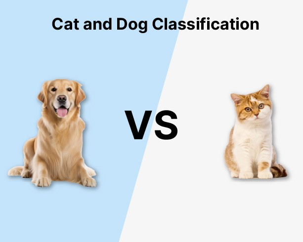

My Projects
Welcome to my portfolio of Projects! Here, you'll find a showcase of my journey in Artificial Intelligence, Machine Learning, and data-driven problem-solving. I specialize in building innovative solutions that optimize workflows, enhance decision-making, and deliver impactful results. From predictive modeling to automation tools, each project highlights my dedication to leveraging technology for real-world challenges. Explore my work below and feel free to connect for collaboration or inquiries!
This application is a Retrieval-Augmented Generation (RAG) system built using Streamlit, LangChain, and integrations with Hugging Face and Groq APIs. It enables users to upload PDF documents and ask questions about the content. The app retrieves relevant sections from the document and generates contextual answers using AI.
This project focuses on forecasting sales data using various machine learning techniques. It employs regression models and time series analysis to predict future sales based on historical data from restaurants and their associated items.
This project aims to perform sentiment analysis on Kindle book reviews using various Natural Language Processing (NLP) techniques and machine learning models. The goal is to classify reviews as positive or negative based on their content.

This repo takes 200 data of cats and dogs and takes a base model VGG16 and trains the fully connected layer on 200 images and do the model evaluation.